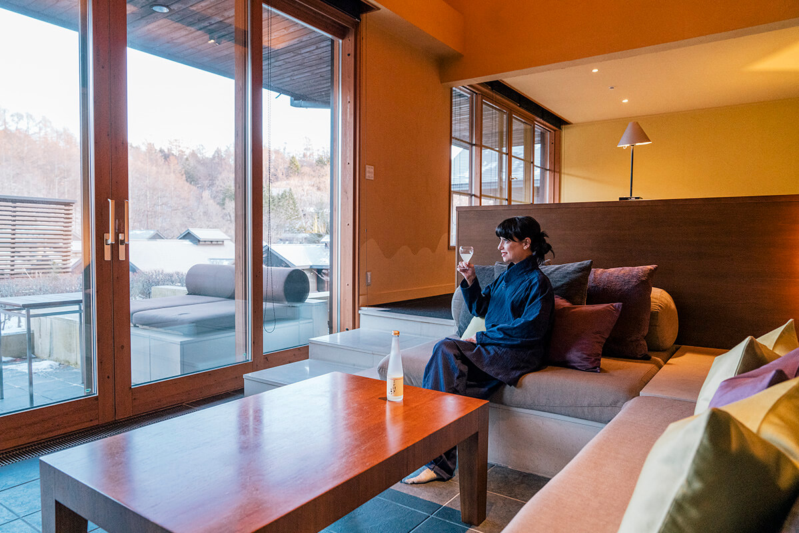
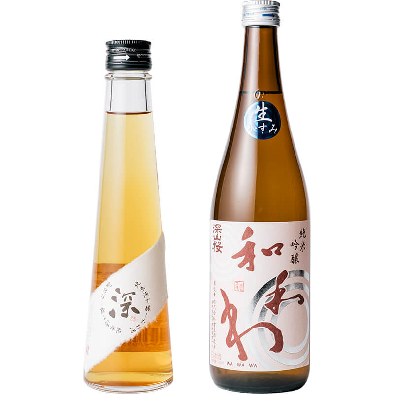
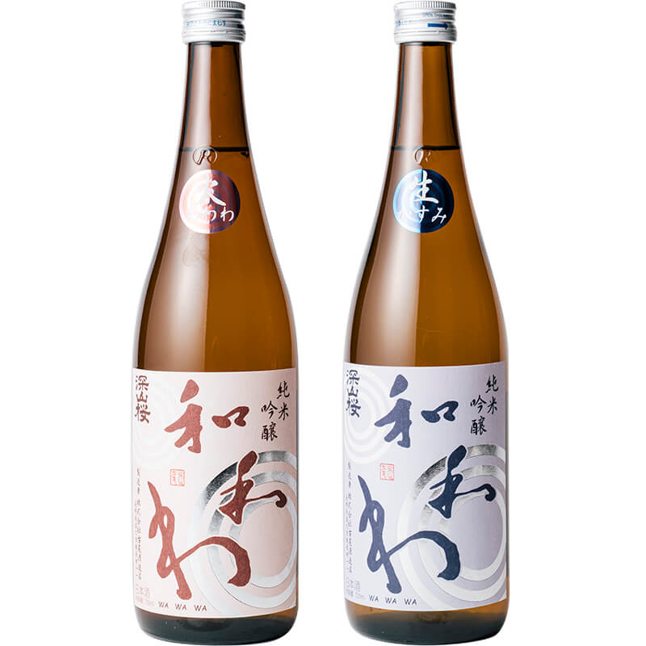
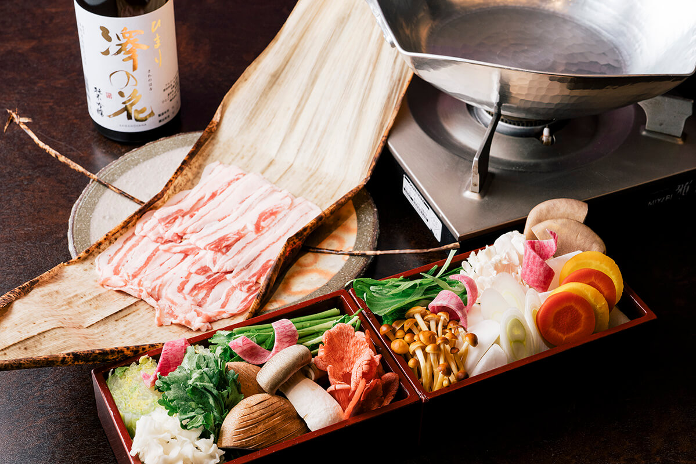
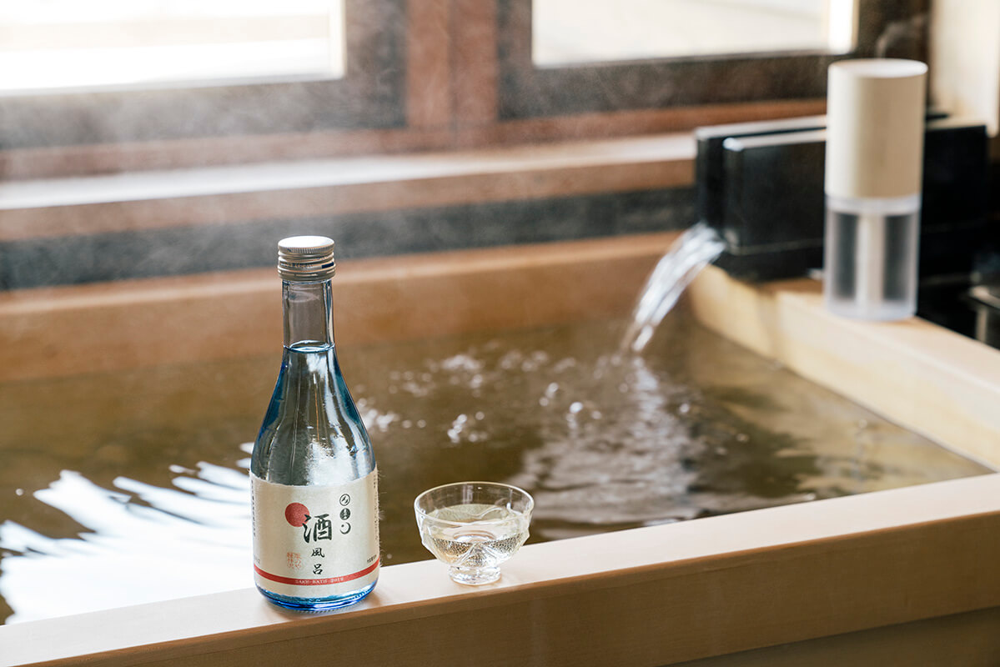

Префектура Нагано · Каруидзава · сакэ
Три дня с сакэ в HOSHINOYA Karuizawa: ванна, ужин в номере и дегустация из Саку

Зимой 2020 года курорт HOSHINOYA Karuizawa предложил гостям программу на две ночи и три дня, в которых сакэ пьют, едят, наносят на кожу и наливают в ванну. Программу прошла сакэ-консультант Ребекка Уилсон-Лай, и её впечатления хорошо показывают, чем сакэ из окрестностей Каруидзавы может быть полезно не только за ужином.
Курорт
Деревня в долине среди леса
В лесу Каруидзавы поют птицы и шумят деревья, а за входом открывается красивая долина с небольшой деревней. Это HOSHINOYA Karuizawa: отдельные домики-номера и купальни здесь стоят вокруг воды, а через центр деревни течёт река. Курорт открылся в 2005 году под девизом «день, чтобы отдохнуть от современности». Проживание и питание здесь разделены: гость сам решает, где и когда ужинать. Этим курорт годами предлагал Японии новый стиль гостиниц и путешествий.
Курорт строит свои программы на том, чем богата округа. С 10 января по 31 марта 2020 года здесь работала программа «SAKE Health Conscious» на две ночи и три дня. В сакэ много аминокислот, витаминов и других полезных веществ, и программа предлагала с его помощью дать отдых и душе, и телу. Партнёрами стали сакэварни района Саку, примерно в получасе езды на машине от курорта.
В программу входили мастер-класс о сакэ и здоровье от владельца сакэварни, процедура для кожи с сакэ в спа, ужин из котелка на сакэ прямо в номере, ванна с сакэ и медитация. Прошла её Ребекка Уилсон-Лай, консультант по сакэ, и осталась довольна.
«Сакэ это культура. Встреча с ним сделала мою жизнь богаче. У программы высокий уровень: она показывает сакэ с разных сторон, и все её части связаны между собой. По-моему, это близко к холистической медицине»
Ребекка Уилсон-Лай, консультант по сакэ
Готовиться заранее не нужно, знания о сакэ тоже не требуются.
«Главное в сакэ удовольствие. Лучше всего сначала просто выпить и почувствовать: вкусно! Вопросы можно задать на мастер-классе прямо владельцу сакэварни. Там рассказывают, как делают сакэ и как его пить, чем живёт сакэварня и что для неё важно. А пока говоришь с владельцем сакэварни, пробуешь несколько сортов одной сакэварни, и разница во вкусе сразу понятна»
Ребекка Уилсон-Лай
Как были устроены три дня
День первый. Заезд в 15:00, в 16:00 мастер-класс от владельца сакэварни о сакэ и здоровье, в 19:00 ужин в номере: котелок на сакэ.
День второй. В 9:00 ванна с сакэ в утреннем тумане, в 15:00 процедура для кожи с сакэ в спа.
День третий. В 9:00 медитация, в 12:00 выезд.
Дегустация
Четыре бутылки из Саку
Участники программы пробовали четыре сакэ. Три из них относятся к линии «Ва-ва-ва» марки «Миямадзакура», все сделаны из риса, отшлифованного до 55%.


Ужин
Котелок, в котором нет ни капли воды
Ребекка жила в номере «Мидзунами»: такие домики стоят у самой реки, которая течёт через центр деревни. Пока она отдыхала с бокалом сакэ, в номер принесли ужин, «бисю-набэ».

Аминокислоты сакэ делают мясо мягче и усиливают вкус продуктов, а раз воды в котелке нет совсем, вкус ингредиентов получается особенно насыщенным.
«Бисю-набэ, где так много сакэ, очень вкусное: сакэ мягко раскрывает вкус кабана и овощей. И с сакэ из Саку оно сочетается прекрасно. Когда пьёшь сакэ той же местности, откуда еда, лучше понимаешь её историю и культуру»
Ребекка Уилсон-Лай
Ванна
Сакэ для кожи и для сна
Программа не ограничивалась вкусом. В ванной номера ставили отдельное сакэ только для купания.

«Ванна с сакэ хорошо пахнет и согревает. На процедуре в спа я тоже расслабилась. У меня сухая кожа, но благодаря кодзи, из которого делают сакэ, она стала мягкой и увлажнённой. И медитация, когда заново прислушиваешься к себе, была замечательной»
Ребекка Уилсон-Лай
К концу таких трёх дней сил на завтра становится больше, а сакэ перестаёт быть чем-то далёким.
HOSHINOYA Karuizawa
- Адрес
- префектура Нагано, Каруидзава, Хосино
- Телефон
- +81 570-073-066 (9:00–20:00)
- Номера
- 77
- Цены / Вход
- от 84 000 иен за номер без налога и сервисного сбора, без питания
- Заезд / выезд
- 15:00 / 12:00
Фото: Ацуси Ямахира.